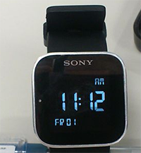
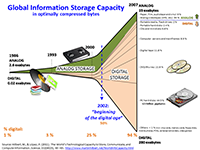

Realidad aumentada

La realidad aumentada (RA) es el término que se usa para definir una visión a través de un dispositivo tecnológico, directa o indirecta, de un entorno físico del mundo real, cuyos elementos se combinan con elementos virtuales para la creación de una realidad mixta en tiempo real. Consiste en un conjunto de dispositivos que añaden información virtual a la información física ya existente, es decir, añadir una parte sintética virtual a lo real. Esta es la principal diferencia con la realidad virtual, puesto que no sustituye la realidad física, sino que sobreimprime los datos informáticos al mundo real.
Con la ayuda de la tecnología (por ejemplo, añadiendo la visión por computador y reconocimiento de objetos) la información sobre el mundo real alrededor del usuario se convierte en interactiva y digital. La información artificial sobre el medio ambiente y los objetos pueden ser almacenada y recuperada como una capa de información en la parte superior de la visión del mundo real.
La realidad aumentada de investigación explora la aplicación de imágenes generadas por ordenador en tiempo real a secuencias de vídeo como una forma de ampliar el mundo real. La investigación incluye el uso de pantallas colocadas en la cabeza, un display virtual colocado en la retina para mejorar la visualización, y la construcción de ambientes controlados a partir sensores y actuadores.
Gamificación

La ludificación —a veces traducido como gamificación, jueguización o juguetización— es el uso de técnicas, elementos y dinámicas propias de los juegos y el ocio en actividades no recreativas con el fin de potenciar la motivación, así como de reforzar la conducta para solucionar un problema u obtener un objetivo
La ludificación pretende introducir estructuras provenientes de los juegos para convertir una actividad a priori aburrida en otra actividad que motive a la persona a participar en ella,1 como sería premiar con insignias ciertos logros a lo largo de la actividad.
Si bien introducir valores lúdicos a estas actividades no es una idea nueva,5 se trata de un concepto que se ha visto magnificado en los últimos años como consecuencia del auge del entorno digital, de los videojuegos y de estudios aplicados a estos, como la ludología.
Impresión 3D

La impresión 3D es un grupo de tecnologías de fabricación por adición donde un objeto tridimensional es creado mediante la superposición de capas sucesivas de material. Las impresoras 3D son por lo general más rápidas, más baratas y más fáciles de usar que otras tecnologías de fabricación por adición, aunque como cualquier proceso industrial, estarán sometidas a un compromiso entre su precio de adquisición y la tolerancia en las medidas de los objetos producidos. Las impresoras 3D ofrecen a los desarrolladores de producto, la capacidad para imprimir partes y montajes hechas de diferentes materiales con diferentes propiedades físicas y mecánicas, a menudo con un simple proceso de montaje. Las tecnologías avanzadas de impresión 3D, pueden incluso ofrecer modelos que pueden servir como prototipos de producto.
Desde 2003 ha habido un gran crecimiento en la venta de impresoras 3D. De manera inversa, el coste de las mismas se ha reducido. Esta tecnología también encuentra uso en los campos tales como joyería, calzado, diseño industrial, arquitectura, ingeniería y construcción, automoción y sector aeroespacial, industrias médicas, educación, sistemas de información geográfica, ingeniería civil y muchos otros.
Wearables

Dentro del sector tecnológico y más concretamente de la electrónica de consumo un wearable o dispositivo wearable es aquel dispositivo que se lleva sobre, debajo o incluido en la ropa y que está siempre encendido, no necesita encenderse y apagarse. Otra de sus características es que permite la multitarea por lo que no requiere dejar de hacer otra cosa para ser usado y puede actuar como extensión del cuerpo o mente del usuario.
Pese a que en la actualidad se le conoce a esta categoría de productos como dispositivos wearable también pueden llamarse dispositivos vestibles, llevables o ponibles e incluso complementos inteligentes.
En la actualidad los dispositivos más importantes dentro de este sector según su categoría son relojes inteligentes o smartwatches, pulseras de actividad, gafas inteligentes o ropa inteligente entre otros.
Big Data
El Big Data o Datos masivos es un concepto que hace referencia a la acumulación masiva de datos y a los procedimientos usados para identificar patrones recurrentes dentro de esos datos. Otras denominaciones para el mismo concepto son datos masivos o datos a gran escala. En la literatura científica en español con frecuencia se usa directamente el término en inglés Big Data.
La disciplina dedicada a los datos masivos se enmarca en el sector de las tecnologías de la información y la comunicación. Esta disciplina se ocupa de todas las actividades relacionadas con los sistemas que manipulan grandes conjuntos de datos. Las dificultades más habituales vinculadas a la gestión de estas cantidades de datos se centran en la captura, el almacenamiento, búsqueda, compartición, análisis, y visualización. La tendencia a manipular ingentes cantidades de datos se debe a la necesidad en muchos casos de incluir los datos relacionados del análisis en un gran conjunto de datos, como los análisis de negocio, publicitarios, los datos de enfermedades infecciosas, el espionaje y seguimiento a la población o la lucha contra el crimen organizado.